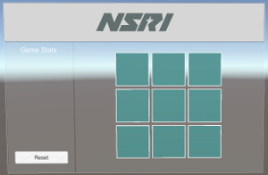
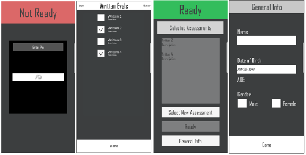
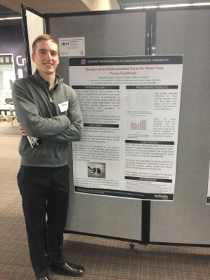

8051 based system
This project is one that defines the computer engineering program at UNO. For this project, I designed an 8051 based microcontroller system which includes external RAM and ROM, an LCD, keypad for input, 7-segment display, a temperature sensor and ADC, and finally an RTC. At its completion, this project was the culmination of my coursework. We are now designing similar systems in higher level courses which implement serial communication into more complex designs.

Five stage pipeline CPU
For this project I designed a basic five stage pipeline CPU which handles a wide variety if MIPs instructions. This project was designed and implimented on a Spartan 3E FPGA development board. It taught the fundamtals and advanced functions needed to program a CPU which completes a Fetch, Decode, Execute, Memory, and Write-back pipeline cycle in the verilog programming language.

CEEN bot two way communication system
The objective for this project was to design a two way communication system between two mobile CEEN bots. Each CEEN bot would have its own temperature sensor. It would display its own temperature, and transmit this data to the other for receival. For this system I chose to use two nRF24L01 tranceiver modules by Nordic semiconductors. I interfaced the modules using the CEEN bot SPI protocol. The CEEN bots were made mobile by programming a loop to drive in a circle, they could then talk to each other using the nRF24L01 modules and display data to the CEEN bot LCD screen.


First PCB design
As a precursor to the course in which the 8051 based system was designed, I built a simple PCB using provided schematics from circuit digest. This project provided my first experience using OrCad in design and manufacturing of PCBs. I chose a simlpe 555 timer "dice" circuit. When the button is pushed, the six LEDs on the side light up rapidly. When the button is released, the lights will halt on a single LED. It is called a dice circuit due to the LEDs transitioning faster than the human eye can see, therefore making it difficult to replicate the same result.

The above image show the prototype (right) and finished product (left). Many mistakes were made in this project but much was learned in the design of my first PCB.
VR applications
During the Summer of 2017, Kaneko hosted a biomechanics exhibit for their Summer display, KINETIC. In this exhibit, the art of movement and perception of motion are explored. For this exhibit, I developed a VR application in Unity which displays actual virtual reality video the biomechanics researchers use in their studies. VR is so commonly used in Biomechanics studies; we have an entire lab dedicated to VR. This lab features a 180 degree screen in front of a treadmill. The videos challenge patients ballance by altering their field of view with dynamic environments.
Unfortunately, this is not actual VR, but a close substitute. My app simply creates a video playing interface to play the videos used in research, and converts these videos to actual VR. To do this, I utilized the Google VR SDK to convert the video to a texture and place it on the inside of a sphere. The video can then be watched in 360 as a VR video.


The image on the far left displays a screenshot of the home page of the app in Unity. The other two pictures show the exhibit at Kaneko.
AR applications
Working first hand with the Microsoft Hololens is an amazing experience. The Hololens is a piece of cutting edge techology, not widely available to the general public due to its cost. I have developed several AR games from basic Tic Tac Toe, to dynamic environments like the solar system, and am currently working on a flight simulator.


Mobile applications
I develop mobile applications for researchers to use and assisst in studies. I am currently working on developing a universal data collection app for the convenience of the Biomechanics researchers. This app will include components often needed in research studies: a stop watch, surveys, connection via bluetooth to devices, data storage, and sensory data collection.
I have developed many apps for the android platform, some of which meeting the criteria listed above. I aim to compress some of these repetitive apps into one. I have developed an app which strictly collects accelerometer and gyroscope data and saves this informatin to a text file. Another, I utilize BLE to connect to an arduino and collect sensor data wirelessly. I have made a similar application using classic Bluetooth. Finally, I have developed a concept design to collect patient surveys and store data in a text file, with other wireless components. All the apps I have developed have taught me the key components of saving data to external storage, wireless communication through both forms of bluetooth, and accessing mobile phone sensors. I have succesfully accomplished these concepts using both Android Studio and Unity. Appliation development is a strong passion of mine and I seek to constantly improve my skills, and learn new techniques and concepts with each app I make.
The first image displays a skeleton app that is still underway. This app is going to administer a survey to a patient and store patient information.
Research Projects
My mentor at Biomechanics studies assitive devices and often needs instrumentation of these devices to collect patient data. I use arduino, raspberry pi, and other open source electronics to design the instrumentation for these assitive devices. After prototyping the device, I convert the system to a far more organized, and reliable, PCB. Many of these devices are made useful for biomechanics studies by adding load cells, IMUs, and many other sensors. I also develop accompanying mobile apps for most devices I make. These apps often communicate wirelessly with the boards through BLE. Many of the device used in research are specially made to suit the unique needs of each researcher. These devices are then validated in research and have potential for patents. Pictures cannot be displayed for this reason.
FUSE study
In Spring 2017, I was awarded a Funds for Undergraduate Scholarly Experiences (FUSE) grant to complete my research. I am currently studying the usefulness and practicality of using smart phones in a clinical setting. For my study, I developed an android application which walks the patient through a balance test by utilizing the phones built in accelerometer and gyroscope. This balance data is then recorded and saved on the phones internal storage and analyzed using MATLAB.

Poster Presentations
I present my research findings at all conferences and poster presentations I am able to attend. So far I have presented my findings at two fairs and one conference.
Smart Mirror
I am currently working on developing a smart mirror. I grew an interest in them after seeing them featured as a good raspberry pi project. I am taking this as an opportunity to learn and better my skills in python, as well as further my skills with the raspberry pi platform and linux operating systems. I am using the PyQt library as my GUI for this project and am using no open source code. This project is still currently underway, but progress pictures and final product will be posted as well.


The screen I am using is an old recycled laptop screen. I no longer needed my latop so I took it apart for some useful components. I found that replacement laptop screen provide the biggest bang for your buck when it comes to LCD modules. A 10" screen on digikey can cost $300 dollars. My 15" unused laptop screen was free, however the same model can be bought brand new for $50. All that is needed is an HDMI to LVDS adapter and driver board.
Web Design
Last but not least, I have dabbled in web design. This website is one of my creations. I enjoy trying and learning new things. I try to always challenge myself with a project outside of my area of expertise. I found the experience of designing this website from scratch to be very enjoyable and satisfying. I plan to seek more opportunites that allow me to make another websites.